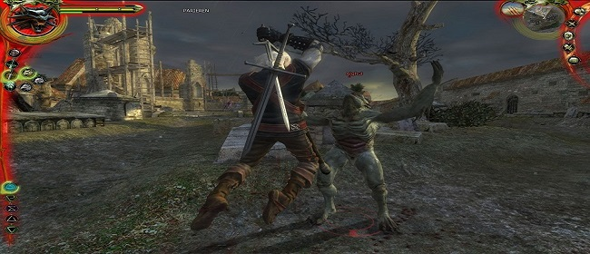

A Witcher harcrendszere jelentősen eltér a legtöbb RPG-kben megszokottaktól. A játékos három harci stílus közül választhat. A „gyors” stílus lehetővé teszi a gyorsabb, azonban kevesebbet sebző támadásokat, és ezzel nagyobb eséllyel találhatjuk el ellenfeleinket. Az „erős” stílussal komolyabb sebzéseket vihetünk be, a lassabb támadások ellenében, azonban kisebb eséllyel találjuk el ellenfeleinket. A „csoportos” stílussal pedig nagy lendületű támadásokat vihetünk be a minket körülvevő ellenfeleinknek. A játékos bármikor szabadon válthat a stílusok közt.
Ezen alapbeállások mindegyike rendelkezik saját speciális harci stílusával. Geralt mindkét – acél és ezüst – kardjának is jelentősen eltérő harci stílusa van, a többi átlagos fegyverei mellet, ezen kardok pedig nagyon eltérő célt szolgálnak. Az acél kard főleg az emberek, illetve hús-vér ellenfelek ellen hasznos, míg az ezüst kard inkább a természetfeletti szörnyek és a bestiák ellen való (akik néha teljesen sebezhetetlenek acél által).
Az alkímia a játékmenet egyik fő része. A játékos képes különféle főzeteket készíteni, amelyek növelik az életerő, illetve kitartás regenerációját, lehetővé teszik Geralt számára, hogy lásson a sötétben, és egyéb előnyöket biztosítanak számára. Ezeknek a főzeteknek a receptjét tekercsek segítségével, vagy kísérletezgetés útján lehet megtanulni. Ha játékos készít egy ismeretlen főzetet, akkor választhat, hogy megissza-e, ám ha rossz a főzet, akkor ezzel megmérgezi a karaktert. Minden egyes főzet elfogyasztásával nő Geralt testében a mérgezettség szintje. Ez speciális főzetek elfogyasztásával, vagy a tábortűznél, fogadóban történő meditáció útján csökkenthető.
A főzetek mellett a játékos készíthet olajokat és bombákat is, előbbiek javítják a fegyverek sebzését, utóbbiak pedig fegyverként használhatóak a harcban. Viszont egyik sem készíthető addig, amíg nem költünk tehetségpontokat a megfelelő képességekre.
| Név | Leírás |
|---|---|
| Ríviai Geralt | A játék főhőse. Végtelenül cinikus, ugyanakkor nagylelkű is. |
| Triss Merigold | Geralt szerelme. Tapasztalt, segítőkész és gondoskodó is. |
| Vesemir | A legidősebb élő witcher. Geralt és sok más witcher tanítója volt. |
| Eskel | Geralt régi tanulótársa. Van egy ronda vágás az arcán. |
| Lambert | Kitűnő harcos és járatos a mágiában is. Geralt barátja. Szeret összeveszni Triss-szel, ám valójában nem gyűlöli a varázslónőt. |
| Leo | Tapasztalatlan witcher tanonc, aki még nem esett át a végső próbán. Kaer Morhen ostroma alatt a Professzor nyílvesszője végez vele. |
| Shani | Fiatal medika, Geralt régi barátja. |
| Vincent Meis | A vizimai őrség kapitánya. Ő felel a csatornai foglyokért, és szenvedélyes trófeagyűjtő. A játék során kiderül, hogy vérfarkas, de nem öl ártatlanokat. |
| Azar Javed | A szalamandra nevű bűnszervezet vezetője. Jól képzett varázsló, ért az alakváltáshoz is. |
| Professzor | Temeria hírhedt bűnözője megszállottan kutat új tudományok iránt. |
| Foltest Király | Temeria kissé gőgös uralkodója. |
| Adda hercegnő | Ő volt a striga, akit Geralt annak idején megszabadított szörnyű átkától. |
A játék a Witcher Geralt köré épül, aki a játék kezdetekor amnéziában szenved. A történetben előrehaladva Geralt rájön, hogy ő az egyik leghíresebb witcher, s szinte mindenhol voltak barátai és ellenségei, akik bár ismerik őt, azonban Geralt nem tudja, hogy ők kik is valójában. A játékos ténykedései befolyásolják ezeket a kapcsolatokat, döntései pedig meghatározzák útját, ebben a politikai intrikákkal teli világában.
A játék fejlesztői sokszor hangoztatták, hogy számukra a fejlesztés legfőbb irányvonala az volt, hogy a játékosnak olyan döntéseket adjanak, melyek távol állnak a jó és rossz sablonoktól, ehelyett inkább a ”kevésbé” rossz lehetőségek közül kell választaniuk. A Witcher úgy lett felépítve, hogy a játékos döntéseinek következményei, gyakran nem azonnal érzékelhetőek, sokszor csak jó néhány fejezettel később derül ki, hogy mennyire választott „helyesen” a játékos. A fejlesztők ezt direkt így akarták megoldani, hogy ezáltal elkerüljék a „ment, választ, visszatölt” stílusú játékmenetet, amit a legtöbb hasonló stílusú számítógépes szerepjátékokban lehet látni.
A „Temeriai Dinasztia” szerint, amely egy Andrzej Sapkowski által írt, a hivatalos oldalán megjelent plusz matéria, miután Geralt levette a Striga átkot Addáról ( Foltest király lánya), a lánynak fehér haja volt, és mentálisan zavarodottá vált. Azonban a játék szerint Adda haja vörös (valószínűleg festett) volt, és nem adtak magyarázatot a mentális állapotára sem.
A játékban megadott 1270-es dátum helytelen - a játék valójában 1273-ban játszódik (5 évvel a nilfgaardi háború után, mely 1268-ban ért véget, és a második catrionai felkelés alatt, ami pedig 1272-ben kezdődött).
A „Tündérmesék és Történetek” és a „Maxima Mundi enciklopédiája” könyveket ugyan a játék magába foglalja, azonban ezek a könyvek, Sapkowski elképzelése szerint csak évszázadokkal később íródtak.
A The Witcher 2 játékmenete jelentősen eltér elődjétől. A harc például sokkal összetettebb, a csapdák elhelyezésének, valamint a távolsági fegyverek célzásának és dobásának képességei révén. A főhősnek, Geraltnak továbbfejlesztett támadó és védekező arzenálja van, közelharci és távolsági fegyverek, páncélok, bombák, csapdák és másodlagos fegyverek, például csatabárdok és lapátok széles választékával.
A The Witcher 3-ban a játékosnak szintén különböző fegyverei vannak,
beleértve a bombákat, a számszeríjat és két kardot (egy acél és egy ezüst).
Geralt az acélkardot elsősorban az emberek megölésére használja, míg az ezüstkard a szörnyek ellen hatékony.
Kétféle közelharci támadás létezik; a könnyű támadás, ami gyors, de gyenge, és a nehéz támadás, ami lassú, de erős.
A játékos a kardjaival védheti ki az ellenséges támadásokat.
A felszerelés tartóssága korlátozott, és rendszeres javítást igényel.
A fizikai támadások mellett Geraltnak öt mágikus jel áll a rendelkezésére:
Aard, Axii, Igni, Yrden és Quen.
A Cyberpunk 2077 egy belső nézetes videójáték, amelyben egy zsoldos, V életét alakíthatjuk 55 évvel később a jövőben. Karakterünk hangja, arca, frizurája, testalkata és ruházata teljesen személyre szabható. A játék során négy különböző irányba fejleszthetjük implantjainkat. Lehetünk közelharci támadók, csendes gyilkosok, professzionális hackerek vagy akár komoly alkatrészekkel felszerelt fegyvereinkkel is felvehetjük a harcot. A fő történetszál mellett teljesíthetünk zsoldos megbízásokat, támogatást nyújthatunk a helyi rendsőrségnek vagy akár mellékszálak követésével tölthetjük el az időnket. Mindezeket megtehetjük rengeteg eurodollár-ért, stabilabb kapcsolatokért, valamint számos megvásárolható járműért.